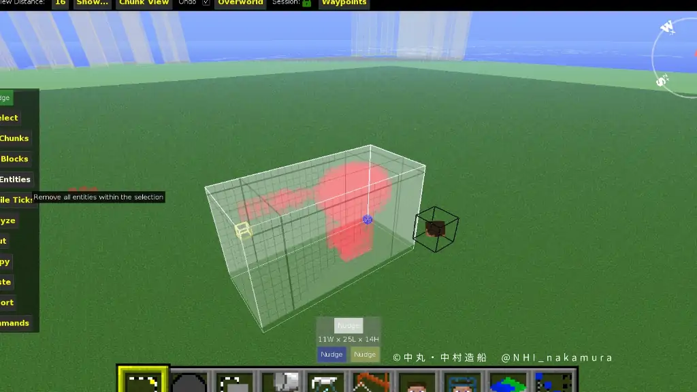

Minecraft向けのMOD「はりぼてエアクラフト」は一塊のブロックを移動させたり回転させることができるMODである。
元はニコニコ動画配信者の企画のために視聴者が開発したMODであるが、現在はもっぱらMincraft軍事部カテゴリーの配信者が使用している。
対応するマインクラフトのバージョンは1.7.10までである。
この記事では、本MODの基本操作を解説する
特長
はりぼてのここがすごい！
- 軽い！
- バグが少ない！
- 余計な機能がない！
はりぼてのここが悪い！
- 開発者失踪済み
導入
もともとマインクラフト非公式日本フォーラムで配布されていたが、2019年にサイバー攻撃により閉鎖されたため現在はウェブアーカイブの「Wayback Machine」からダウンロードするしかない。
以下でZIPのみダウンロード（ウェブアーカイブに移動する）
https://web.archive.org/web/20190715150654/http://forum.minecraftuser.jp/download/file.php?id=48572
これを、zipのままmodsフォルダーに入れる。
.minecraft/forge1.7.10のフォルダ/mods←この中
以下がそのフォーラムの配布ページ。表示に時間がかかる。上記のリンクはこのページの中のHariboteAirCraft_172v3.zip。他のバージョンもある。 https://web.archive.org/web/20150719055948/http://forum.minecraftuser.jp/viewtopic.php?t=10418
使い方
zip内のReadme.txtが説明書。
動かしたいブロック塊に羅針盤を設置
- 羅針盤ブロックを右クリックすると、ブロックの塊がエンティティ化（はりぼて化）する。
面同士で接しているブロックが一つの塊と認識されます。コンフィグで設定した以上のブロックが繋がっている場合は適当な位置で分割される。 - はりぼて化すると自動的にはりぼての上に座る。降りるにはShiftキー、再び乗るにははりぼての上で足元を見ながら右クリック（羅針盤ブロックでなくてもよい）。
- テンキーで移動する。テンキーが無い人は
買いましょう。コンフィグを変更しましょう。
移動方法は下の画像を参照 - "/"キーではりぼてを解除
やっておいた方がいい設定
設定変更方法
modsフォルダーから出て、configフォルダの中の、mod_HariboteAirCraft.txtがコンフィグファイル。この内容を書き換えて設定する。
.minecraft/forge1.7.10のフォルダ/config/mod_HariboteAirCraft.txt←これ
やっておいた方がいい設定
- blockLimit=2000 必要ならさらに増やす
- renderIgnore=93 リピーターを描画しない。バグ対策
リピーターをコンパレータでロックした状態ではりぼて化するとクラッシュし、ワールドに入れなくなるというバグがある。
クラッシュしたときの対処法
はりぼて化によってクラッシュした場合、ワールドに入れなくなる。ワールド内の原因となっているはりぼてを外部ツールで削除すれば、はりぼては戻ってこないがワールドには入れるようになる。
MCEditを使う
ワールドを読み込むと、はりぼてがエンティティとして表示されている。この範囲を選択し、「Delete Entity」で削除してセーブ。
MCEditの使い方記事もかくかも。←書きました。 こちら
終わったらMCEditを終了し、マイクラでワールドを読み込む
